ซีซั่น 2 · อัปเดต 02 · 4 พฤศจิกายน
ปรับบทบาทใหม่
- ตอนนี้ตุ๊กตาทุกตัวมีบทบาทเดียว
- ยกเลิกบทบาทระยะไกล ตุ๊กตาที่เคยมีระยะไกลควบกับบทบาทอื่นจะเสียเฉพาะระยะไกลไป ส่วน “ระยะประชิด” และ “ระยะไกล” ในข้อมูลตุ๊กตายังคงแสดงลักษณะการโจมตีปกติเหมือนเดิม
- เพิ่มบทบาทใหม่ คือ สไนเปอร์ เป็นบทบาทของตุ๊กตาที่มีระยะโจมตีปกติตั้งแต่ 4 ช่องขึ้นไป
การเปลี่ยนแปลงของตุ๊กตาแต่ละตัว
 ฟลาโม
ฟลาโม
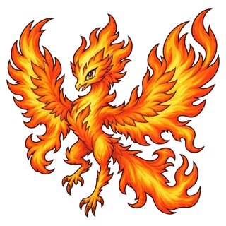
ฟลัมโมนิกซ์
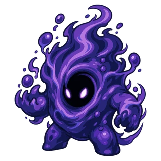
วอยด์ลิ่ง
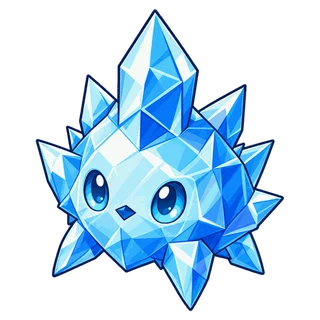
กลาสซี่
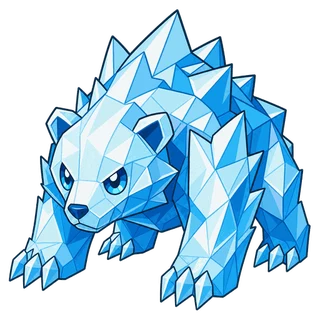
โพลาร์ร็อก
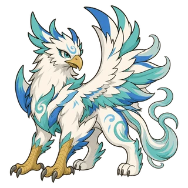
กริฟฟิออน
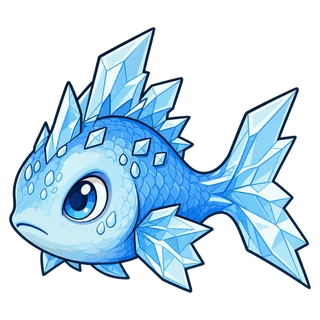
ชาร์ดฟิน
- บทบาทเปลี่ยนจาก ระยะไกล เป็น นักสู้
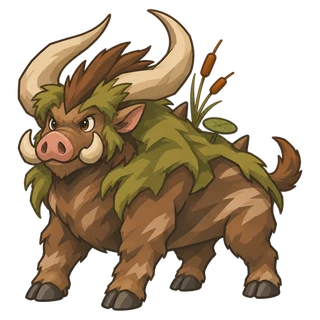
บ็อกฮอร์น
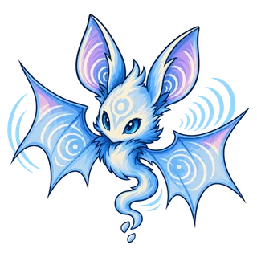
เอคโควิง
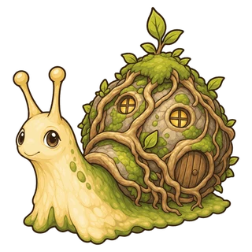
หอยทากพิษ
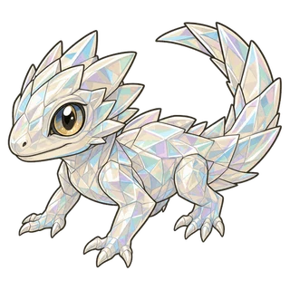
ฟริโก
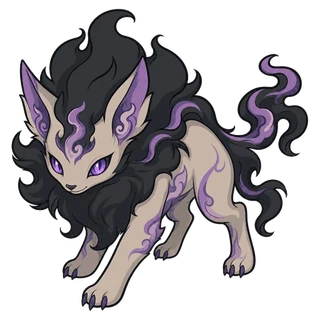
เดรดฟ็อกซ์
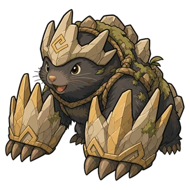
อุ้งเท้าเหล็ก
 เมาส์บอล
เมาส์บอล
- บทบาทเปลี่ยนจาก ระยะไกล เป็น สไนเปอร์
 ออปติเมาส์
ออปติเมาส์
- บทบาทเปลี่ยนจาก ระยะไกล เป็น สไนเปอร์
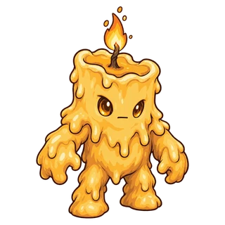
เมลตี้
ป้องกันปราสาท: คุณสมบัติตามบทบาท
ตอนนี้ตุ๊กตาจะมีคุณสมบัติตามบทบาทของตนตั้งแต่ตอนที่เข้าร่วมทีม
- แทงก์: ความเสียหายที่ได้รับลดลง 20%
- นักสู้: ฟื้นพลังชีวิต 10% ของความเสียหายที่ทำ
- จอมเวท: ความเสียหายที่ทำเพิ่ม 10%
- นักจู่โจม: ความเสียหายต่อศัตรูที่พลังชีวิตไม่เกิน 50% เพิ่ม 25%
- สไนเปอร์: ระยะ +1 ช่อง
- ซัพพอร์ต: มานา +10 ทุกวินาที
ป้องกันปราสาท: เสริมและไอเทม
- การโจมตีปิดฉาก (เสริมพิเศษใหม่): สำหรับนักจู่โจม ความเสียหายต่อศัตรูที่พลังชีวิตไม่เกิน 50% เพิ่ม 30%
- ยิ่งไกลยิ่งแรง (เสริมพิเศษใหม่): สำหรับสไนเปอร์ ความเสียหายที่ทำเพิ่ม 5% ต่อระยะห่างจากเป้าหมาย 1 ช่อง
- วงจรมานา: ตอนนี้สำหรับซัพพอร์ตเท่านั้น รัศมีเปลี่ยนจาก 2 ช่อง เป็น 6 ช่อง
- เสริมพิเศษเฉพาะบทบาทเป็นไปตามบทบาทใหม่ข้างต้น
- เสริมความเร็ว: เปลี่ยนจากความเร็วโจมตี +8% เป็นความเร็วโจมตี +8% และความเร็วเคลื่อนที่ +8% “เสริมการเคลื่อนที่” ถูกนำออก
- แหวนสายฟ้า: ตอนนี้การกระโดดแต่ละครั้งที่ไปถึงเป้าหมายจะนับเป็นการโจมตี
- หน้ากากก็อบลิน: แก้ไขปัญหาที่ศัตรูในรัศมีซึ่งเสริมพิเศษ “พื้นที่ส่งผล” ขยายเพิ่มไม่ได้รับผลของหน้ากาก
ป้องกันปราสาท: การเล่น
- ตอนนี้เลือกตุ๊กตาจากการ์ดภาพเหมือน 3 ใบ แทนการเดินขึ้นไปยืนบนแท่น
- ดาวของศัตรูที่ล้มลงจะตกลงบนพื้นตรงจุดที่มันล้ม และจะลอยเข้าหาอวตารเมื่ออวตารเข้ามาอยู่ภายใน 1.5 ช่อง
- มงกุฎ ค้อนสองมือ เกราะหนาม ผ้าคลุมแวมไพร์ และแหวนสายฟ้า ตอนนี้แสดงบนตัวตุ๊กตา
- ปราสาทตอนนี้แสดงบาดแผลเมื่อพลังชีวิตลดลง ทั้งรอยฉีกขาดบนกำแพง ควันและเปลวไฟ เมื่อพลังชีวิตต่ำกว่า 25% ขอบจอจะเป็นสีแดงและมีเพลงบอสดังขึ้น
- ตอนนี้ “ศัตรูกำลังหลั่งไหลเข้ามา!” จะปรากฏเมื่อรอบใหม่เริ่มขึ้นขณะที่ศัตรูจากรอบก่อนยังเหลืออยู่มาก